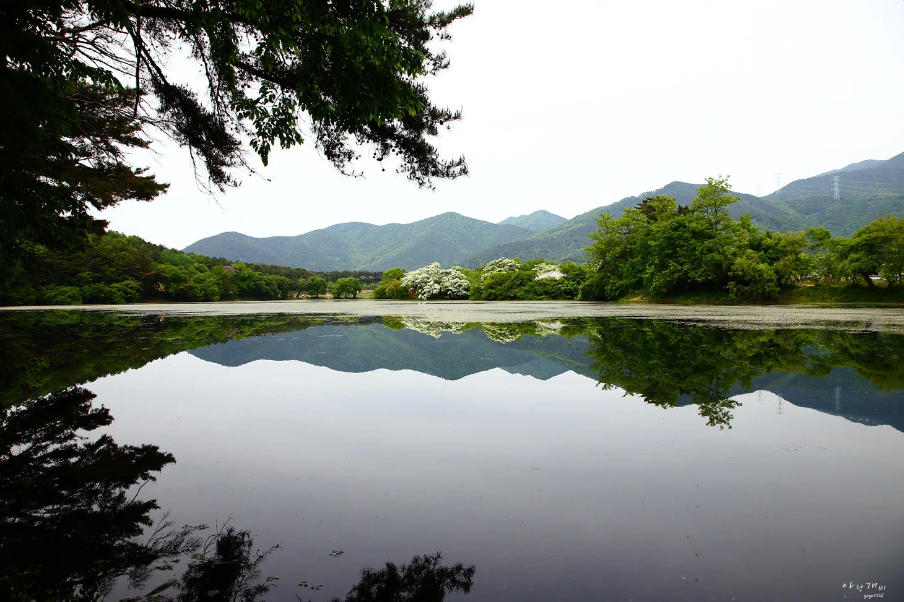
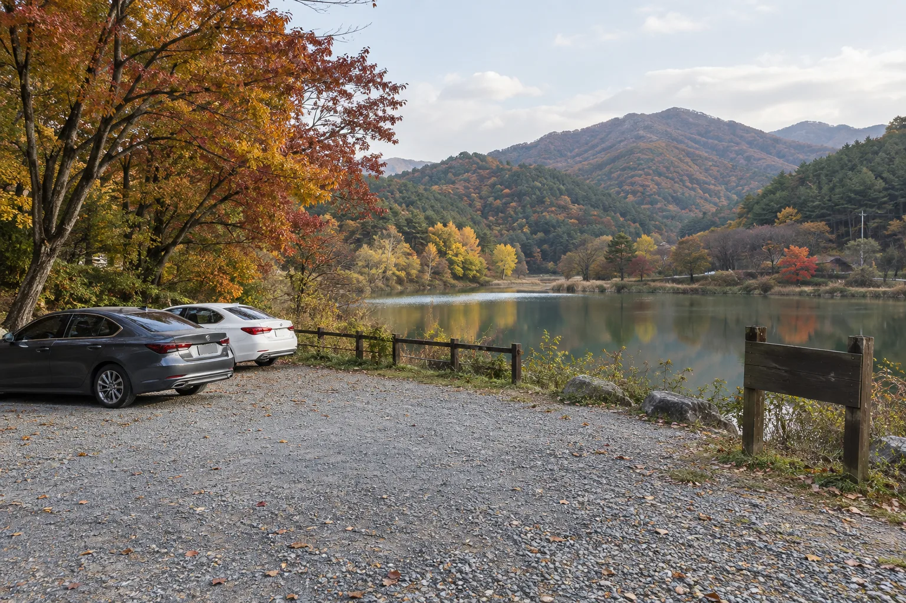
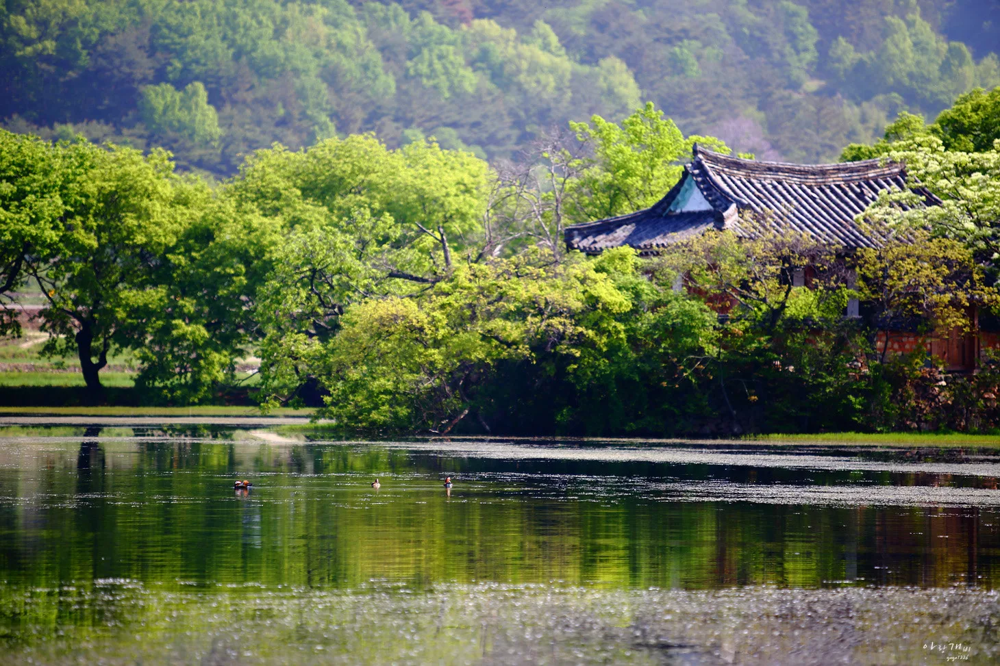
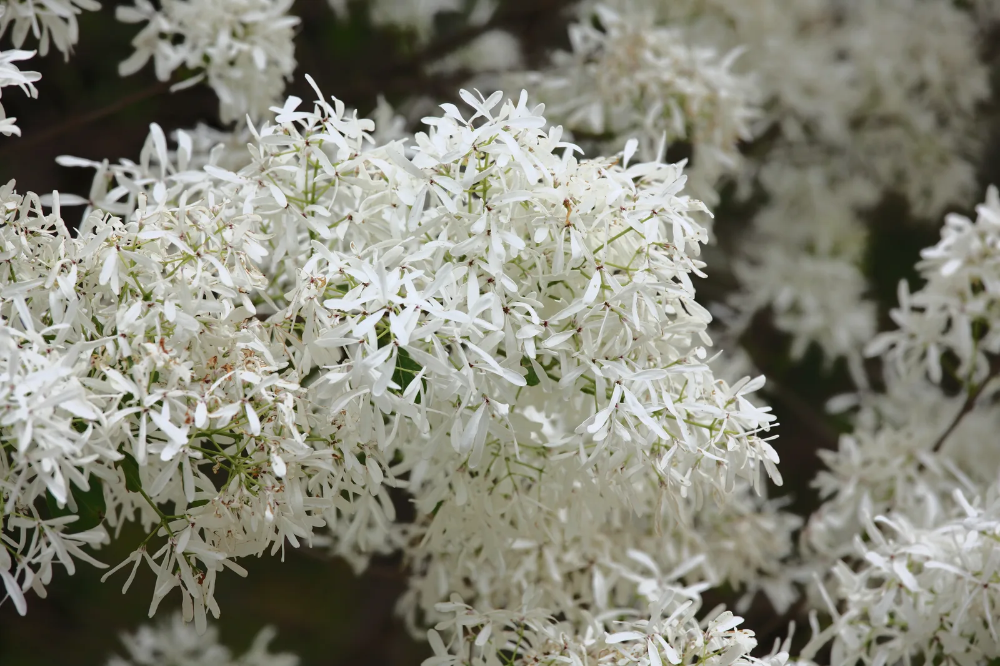
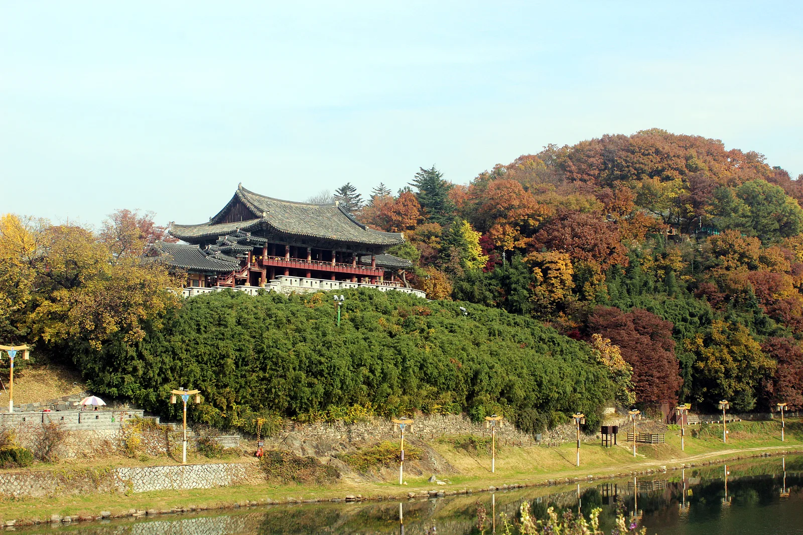
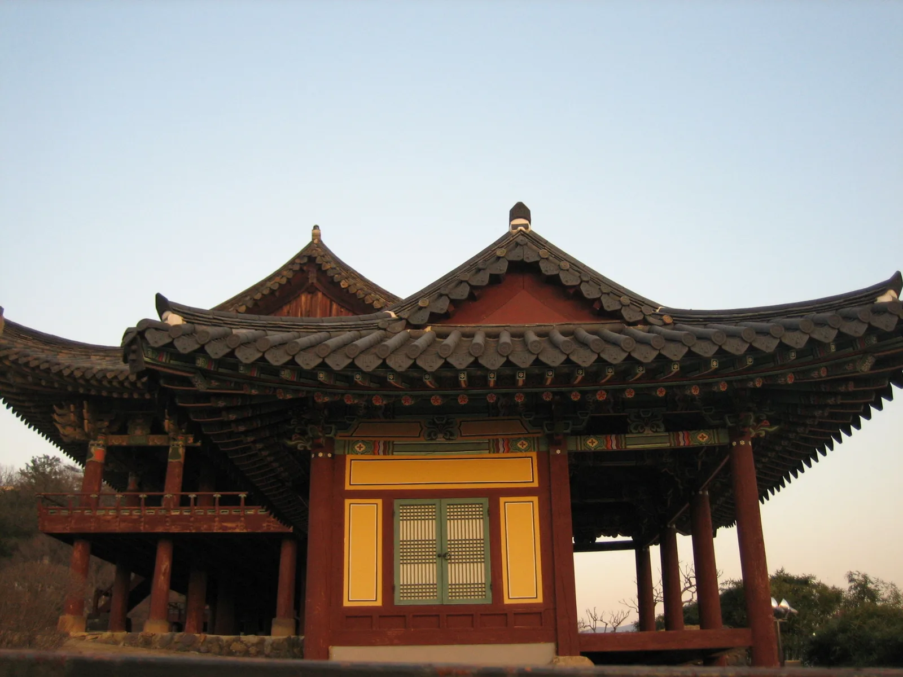
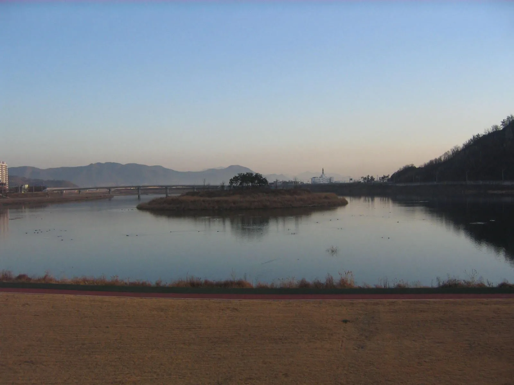
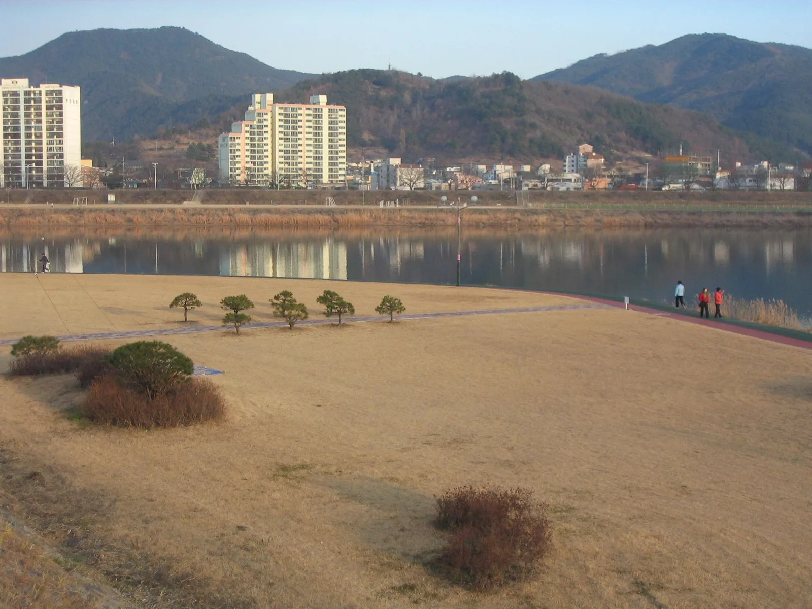

▲ 위양지 완재정과 주변 숲이 수면에 그대로 비친 모습(촬영 시기는 신록이 짙은 초여름). 가을에는 같은 자리가 단풍으로 물든다 사진=Wikimedia Commons (Seong Gyu Eok Men, CC BY-SA 3.0)
1. 위양지, 가을에도 가볼 만한 이유
경남 밀양시 부북면 위양로 273-36에 있는 위양지(位良池)는 이름 그대로 '백성을 위한다'는 뜻을 품은 저수지다. 정확한 축조 연대를 알려주는 기록은 남아 있지 않다. 밀양시 문화관광 홈페이지는 신라시대에 농업용수 공급을 위해 축조됐다고 소개하고, 디지털밀양문화대전은 통일신라에서 고려 시기 사이에 조성된 것으로 추정된다고 좀 더 폭넓게 정리한다. 출처마다 표현이 다른 만큼 정확한 조성 시기는 확정하기 어렵다는 점을 감안하는 것이 좋다. 이후 임진왜란 때 훼손된 못은 1634년 밀주부사(密州府使, 밀양부사) 이유달이 다시 쌓았다. 봄이면 못가를 두른 이팝나무가 흰 꽃을 흐드러지게 피워 밀양팔경 중 하나로 꼽힐 만큼 유명해졌고, 그만큼 4월 하순부터 2주 남짓한 절정기에는 인파가 몰린다. 하지만 이팝나무 꽃이 지고 난 가을에도 위양지는 갈 만하다. 흰 꽃 대신 단풍이 못 가운데 섬의 정자 완재정(宛在亭)을 물들이고, 봄철의 북적임 대신 한결 잦아든 고요함이 그 자리를 채운다. 자세한 이용 정보는 밀양시 문화관광 홈페이지에서 확인 가능하다.

▲ 위양지 전경. 건너편 산줄기와 못가 나무들이 잔잔한 수면에 데칼코마니처럼 비친다(사진은 이팝나무 꽃이 핀 봄철) 사진=Wikimedia Commons (Seong Gyu Eok Men, CC BY-SA 3.0)
2. 자가용으로 가는 법과 주차
위양지는 대중교통보다 자가용 접근이 사실상 필수인 곳이다. 주소는 경남 밀양시 부북면 위양로 273-36이며, 밀양 시내에서 부북면 방면으로 이동하면 닿는다. 정확한 경로는 출발지에 따라 달라지므로 내비게이션으로 검색하는 것을 권한다. 밀양시 문화관광 홈페이지에 따르면 위양지는 입장료가 없고 이용시간 제한도 없어 사실상 24시간 개방된 공간이며, 주차장은 일반 48면·장애인 2면·임산부 1면, 총 51면이 무료로 운영된다.
다만 주차 면수가 넉넉한 편은 아니다. 지역 언론 보도에 따르면 이팝나무가 절정을 이루는 5월 주말에는 수천 명의 관광객이 몰리면서 50여 면뿐인 주차장이 금세 들어차고, 미처 자리를 찾지 못한 차량들이 진입로와 인근 농로까지 점령해 보행자 안전과 영농 차량 통행에까지 지장을 줄 정도라고 한다. 가을에는 이런 극심한 혼잡은 덜하지만, 단풍이 좋은 주말이나 지역 행사가 겹치는 날에는 여전히 붐빌 수 있으니 오전 이른 시간 방문을 권한다. 문의는 밀양시 문화예술과(055-359-5641)로 하면 된다.

▲ 저수지 인근의 소규모 주차장 분위기를 보여주는 이미지. 위양지 주차장도 51면 규모로 크지 않아 성수기 주말에는 일찍 들어차는 편이다 이미지=AI 생성
3. 둘러보는 동선 — 저수지 유래와 완재정, 그리고 반영 사진
위양지는 처음 조성될 당시 제방 둘레가 4.5리(약 1,767m)에 달했으나, 세월이 흐르며 규모가 줄어 현재는 둘레 약 1km, 면적 62,790㎡로 정리됐다. 못 안에는 크고 작은 섬 5개가 떠 있고, 그중 가장 큰 섬에 자리한 정자가 완재정이다. 완재정은 1900년 안동권씨 후손들이 임진왜란 이후를 살았던 학산(鶴山) 권삼변(1577~1645)을 기려 세운 3칸 규모의 건물로, 1914년에 6칸을 더 지어 지금의 모습을 갖췄다. 팔작지붕에 정면 3칸·측면 2칸의 아담한 목조 건물로, '완재(宛在)'라는 이름은 권삼변이 생전에 정자를 지을 뜻을 담아 지은 「완재정」 시에서 따왔으며, 그 출전은 『시경』 겸가(蒹葭)편이다. 예전에는 배를 타고 드나들었지만 지금은 다리로 연결돼 있어 걸어서 섬까지 들어갈 수 있다.
위양지를 찾는 이들이 가장 많이 카메라를 드는 곳은 완재정과 그 뒤 숲이 수면에 고스란히 담기는 반영 포인트다. 바람이 잦아드는 이른 아침에는 물결이 거의 일지 않아 정자와 배경의 나무가 데칼코마니처럼 물 위에 겹쳐 보인다. 봄에는 이팝나무의 흰 꽃과 신록이, 가을에는 단풍이 이 반영을 채운다는 점이 다를 뿐, 완재정을 마주 보는 못 둘레 산책로에서 담는 구도 자체는 계절을 가리지 않는다. 못 둘레는 평탄한 흙길이라 카메라 삼각대를 세우고 여유 있게 구도를 잡기에도 부담이 없다.

▲ 나무 사이로 드러난 완재정의 팔작지붕과 그 앞 수면에 비친 반영. 사진 속 물새는 위양지에서 흔히 볼 수 있는 원앙이다 사진=Wikimedia Commons (Seong Gyu Eok Men, CC BY-SA 3.0)
4. 가을 방문 팁 — 이팝나무 대신 무엇을 보나
미리 솔직하게 밝혀 둘 것이 있다. 위양지를 유명하게 만든 이팝나무는 4월 하순부터 약 2주간이 절정이라, 가을에는 흰 꽃을 볼 수 없다. 봄 시즌 사진만 보고 가을에 찾았다가 실망하는 경우가 있는 만큼, 가을 방문은 애초에 '이팝나무 꽃' 대신 다른 매력을 기대하고 가는 편이 낫다. 대신 가을 위양지에는 완재정 주변을 물들이는 단풍, 봄철 같은 인파 없이 못 둘레를 천천히 돌 수 있는 고요함, 그리고 잔잔해진 수면에 비치는 가을 하늘이 있다. 못 둘레 산책로는 약 1km 남짓으로 경사가 거의 없어 가볍게 걷기 좋고, 완재정으로 이어지는 다리를 건너 섬 안쪽에서 못 전체를 둘러보는 것도 가능하다.

▲ 이팝나무(Chionanthus retusus) 꽃송이. 위양지의 이팝나무는 4월 하순부터 5월 초까지 이렇게 흰 꽃으로 뒤덮이지만, 가을에는 꽃이 지고 잎이 단풍으로 물든다 사진=Wikimedia Commons (Tanaka Juuyoh, CC BY 2.0)
📍 방문 전 확인할 것
위양지는 농업진흥지역이자 문화재보호구역으로 지정돼 있어 주차장을 크게 늘리기 어려운 상황이라고 한다. 단풍철 주말이나 지역 행사가 겹치는 날짜는 방문 전 밀양시 문화관광 홈페이지나 밀양시 문화예술과(055-359-5641)에 혼잡 여부를 확인해 보는 것이 좋다.
5. 주변 연계 코스 — 영남루와 밀양강
위양지에서 밀양 시내 방향으로 이동하면 밀양강변 절벽 위에 자리한 영남루에 닿을 수 있다. 정확한 이동 시간은 경로에 따라 달라지므로 내비게이션으로 확인하는 것이 좋다. 영남루는 신라 경덕왕(742~765년) 때 영남사의 부속 누각에서 비롯됐다고 전하며, 고려 공민왕 때인 1365년 밀양부사 김주가 규모를 키운 데 이어 1844년 밀양부사 이인재가 중건한 것이 지금의 건물이다. 진주 촉석루, 평양 부벽루와 함께 조선의 3대 누각으로 꼽혀 왔고, 오랫동안 보물 제147호였다가 2023년 12월 국보로 승격됐다. 위치는 경남 밀양시 중앙로 324(내일동)이며, 오전 9시부터 오후 6시까지 연중무휴로 무료 개방되고, 인근 영남루노외공영주차장(유료)을 이용하면 된다.
| 구분 | 위양지 | 영남루 |
|---|---|---|
| 주소 | 밀양시 부북면 위양로 273-36 | 밀양시 중앙로 324(내일동) |
| 이용시간 | 제한 없음(상시 개방) | 09:00~18:00, 연중무휴 |
| 입장료 | 무료 | 무료 |
| 주차 | 51면(무료) | 영남루노외공영주차장(유료) |
영남루 아래로는 밀양강이 흐른다. 밀양시가 조성한 '영남루 수변공원길'(약 6.2km, 도보 약 2시간)을 따라가면 삼문송림과 조각공원, 아랑각, 밀양읍성 등을 함께 둘러볼 수 있다. 재약산 자락의 표충사와 얼음골 쪽은 위양지·영남루와는 다른 권역에 있어 하루에 모두 묶기보다는 별도 코스로 계획하는 편이 낫다. 표충사·얼음골 코스는 본지가 이미 정리한 밀양 표충사·얼음골 하루 코스 기사를 참고하면 된다.

▲ 단풍이 물든 언덕 위에 자리한 영남루. 아래로 밀양강이 흐른다 사진=Wikimedia Commons (CC BY-SA 4.0)

▲ 영남루의 겹처마와 단청. 조선 후기 누각 건축의 화려함을 보여준다 사진=Wikimedia Commons (CC BY-SA 3.0)

▲ 노을 무렵 밀양강의 하중도와 다리. 영남루 인근을 흐르는 강줄기도 이런 풍경을 만든다 사진=Wikimedia Commons (Public Domain)
6. 하루 코스로 정리하면
오전 이른 시간 위양지에 도착해 완재정 반영 포인트에서 사진을 담고 못 둘레 산책로를 천천히 걸은 뒤, 차로 밀양 시내로 이동해 영남루와 밀양강변을 함께 둘러보면 하루 코스로 무리 없이 묶인다. 시간이 넉넉하다면 영남루 수변공원길을 따라 삼문송림이나 조각공원까지 걸어보는 것도 좋다. 표충사·얼음골처럼 밀양 남동쪽 권역까지 더한 1박 2일 코스를 계획한다면 별도 일정으로 나누는 편을 권한다.

▲ 밀양강변 산책로. 영남루 인근에서 이런 강변 풍경을 함께 즐길 수 있다 사진=Wikimedia Commons (Public Domain)
✅ 출발 전 확인할 것
· 가을엔 이팝나무 꽃이 없다는 점을 미리 감안할 것(대신 단풍·고요함 위주로 즐기기)
· 위양지 주차장은 51면으로 크지 않아 단풍철 주말은 이른 시간 방문 권장
· 영남루는 유료 공영주차장 이용, 이용시간(09:00~18:00) 확인
· 표충사·얼음골 등 밀양 남동쪽 권역은 별도 코스로 계획